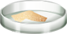

Step 1: Press ‘On’ button of the analytical balance
Step 2: Place the Petri dish on weighing balance

Step 3: Press ‘Tare’ button of the analytical balance to make it zero
Step 4: Weigh 5 g ground food sample



Step 5: press ‘On’ button of the convective hot air oven and set temperature to 105°
Step 6: Place sample Petri dish in oven once present temperature reaches 105°C

Step 8: Take out petri dish from desiccator and record the weight
Step 6: Place sample Petri dish in oven once present temperature reaches 105°C
Step 10: Take out petri dish from desiccator and record the weight

Step 6: Place sample Petri dish in oven once present temperature reaches 105°C
Step 10: Take out petri dish from desiccator and record the weight
Observation Table
Weight of sample 5 gm
Weight of petri dish 30 gm
| s. no. | weight |
|---|---|
| 1 | |
| 2 | |
| 3 |